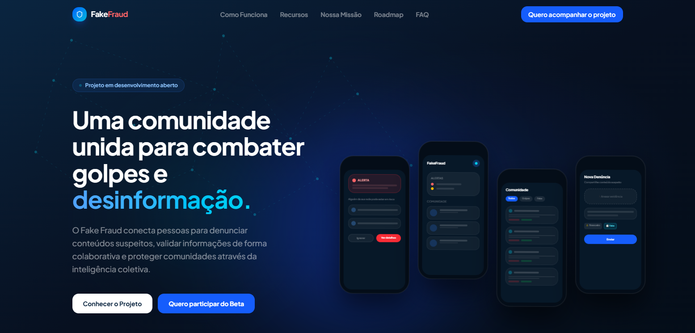

Fake Fraud
Product Design
Plataforma colaborativa desenvolvida para incentivar a verificação de informações antes do compartilhamento, unindo pesquisa com usuários, arquitetura da informação, prototipação e uma interface intuitiva.
Ver projeto